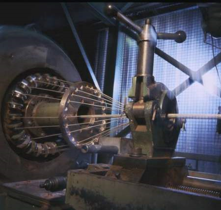
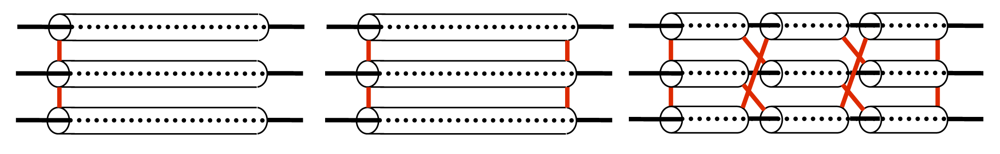
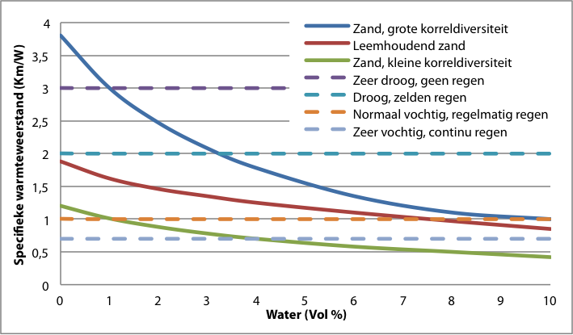
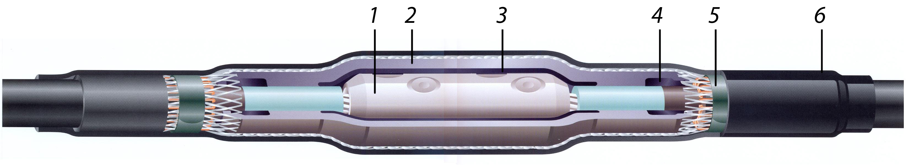
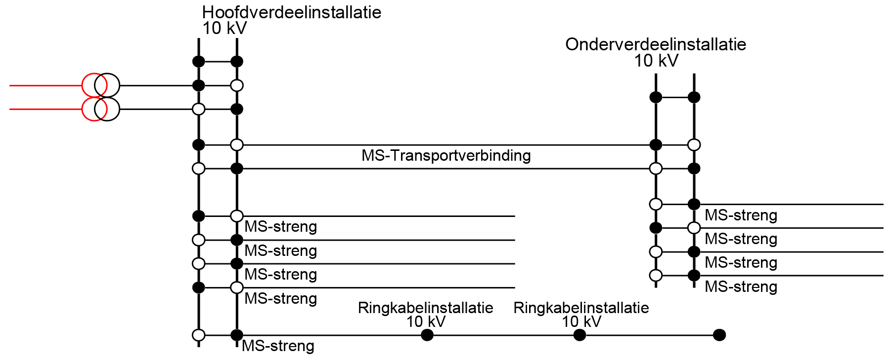
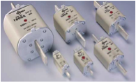
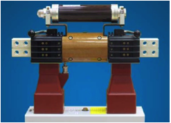

In hoofdstuk 4 worden de meest gebruikte componenten in de MS- en LS-netten beschreven. Hieronder vallen onder andere kabels, moffen, transformatoren, smoorspoelen, vermogenschakelaars, schakelinstallaties en smeltveiligheden.
De belangrijkste componenten in MS- en LS-netten zijn kabels, transformatoren en schakelinstallaties. Bovengrondse lijnen komen in Nederland op deze spanningsniveaus bijna niet voor en worden daarom niet behandeld. Dit hoofdstuk geeft een overzicht van deze meest gebruikte componenten. De modellering en het gedrag in loadflow- en kortsluitberekeningen komt in latere hoofdstukken aan de orde.
Kabels zijn in vele typen en uitvoeringsvormen verkrijgbaar. Alle kabels bestaan uit 1, 3 of 4 aders (geleiders met isolatie), een afscherming en een buitenmantel. Afhankelijk van het spanningsniveau en de toepassing zijn er grote verschillen in de constructie van de kabel. Dit hoofdstuk behandelt de meest toegepaste kabels voor LS- distributienetten en voor MS-transport- en -distributienetten.
In de MS-netten worden meestal kabels met drie aders toegepast. Een ader bestaat uit een geleider van koper of aluminium, die wordt omgeven door geleiderscherm, isolatie en aderscherm.

De geleider kan zijn opgebouwd uit meerdere draden van kleine doorsnede, die compact zijn ‘geslagen’ tot een dikke geleider van de gewenste geleiderdoorsnede. Indien de geleider van aluminium is, wordt deze ook wel ‘massief’ uitgevoerd met een enkele geleider van de gewenste geleiderdoorsnede. Vanwege de buigzaamheid worden massieve geleiders in drieaderige kabels tot een geleiderdoorsnede 240 mm2 toegepast. Bij enkeladerige kabels worden massieve geleiders tot een geleiderdoorsnede 800 mm2 toegepast. Bij grotere geleiderdoorsneden worden geslagen geleiders toegepast.


Het geleiderscherm en het aderscherm worden bij kabels voor MS-niveau en hoger toegepast om het elektrische veld in de isolatie homogeen te verdelen. Er kunnen namelijk oneffenheden voorkomen op de geleider of de afscherming, waardoor het elektrische veld lokaal vrij groot kan worden. Dit kan kleine ontladingen veroorzaken, waardoor de kabel snel veroudert. Om die oneffenheden op te heffen wordt een scherm, bestaande uit een halfgeleidende laag, om de geleider en om de isolatie aangebracht, zodat het veld zich in de isolatie homogeen zal verdelen. De aldus geïsoleerde geleiders worden aders genoemd en deze worden samengeslagen tot drie compact gebundelde aders.
De samengeslagen aders zijn afgeschermd met een scherm dat in staat is om langdurig kleine vereffeningstromen en kortstondig een kortsluitstroom te voeren.
De meest gebruikte typen hebben een massa-geïmpregneerde papierisolatie of een kunststofisolatie. Een voorbeeld van een massa-geïmpregneerde kabel is het type GPLK (Gepantserde Papier-Lood Kabel) voor geleiderdoorsneden tot 300 mm2. Deze kabels worden niet meer gebruikt bij aanpassingen in het MS-net. De productie ervan is gestopt in 2005. Tegenwoordig worden kabels met kunststof isolatie van XLPE (Cross-Linked Poly-Etylene, vernet polyetheen) gebruikt. De belangrijkste kenmerken van beide typen zijn (de nummering verwijst naar figuur 4.2):
GPLK |
XLPE |
1. koperen of aluminium geleiders 2. aderisolatie (massa-geïmpregneerd) 3. gordelisolatie (massa-geïmpregneerd) 4. afscherming van lood (geëxtrudeerd) 5. tussenlaag van gebitumeerd papier 6. tussenlaag van kunststofgaren of jute 7. wapening van verzinkt staalband 8. buitenmantel van kunststofgaren of jute en bitumen of PVC of PE |
1. koperen of aluminium geleiders, geslagen of massief 2. aderscherm (halfgeleidende laag) 3. cross-linked polyethyleen isolatie 4. aderscherm (halfgeleidende laag) 5. afscherming van koperdraden 6. zwelband tegen indringing van vocht 7. polyethyleen of PVC buitenmantel |
De GPLK kabels zijn in het verleden veel toegepast en zijn nog alom tegenwoordig in de MS-transport- en distributienetten. De aders in GPLK-kabels hebben een isolatie die is opgebouwd uit papierlagen die geïmpregneerd zijn met een mengsel van olie, hars en was (de massa). Bij hoge temperaturen wordt dit mengsel vloeibaar, waardoor de geleidertemperatuur gelimiteerd is op 50 °C om beschadiging en versnelde veroudering van de isolatie te voorkomen. De aders van GPLK-kabels zijn omsloten door een loodmantel. De kabels zijn versterkt (gewapend) met verzinkt staalband en tenslotte voorzien van een buitenmantel.
De isolatie van de aders van kunststof MS-kabels bestaat uit vaste XLPE met een halfgeleidende laag aan geleider- en afschermingzijde. De halfgeleidende laag zorgt voor veldsturing om een homogeen elektrisch veld te verkrijgen. Kunststof kabels hebben een koperdraadscherm voor het voeren van kleine vereffeningstromen en kortstondige kortsluitstromen en het fungeert tevens als wapening. Kabels met XLPE-isolatie mogen tot een geleidertemperatuur van 90 °C belast worden, waardoor deze kabel redelijk goed bestand is tegen zware belastingen. Ondergronds gelegde XLPE-kabels worden echter meestal niet langdurig op hun maximum geleidertemperatuur belast, omdat dan de buitenmanteltemperatuur te hoog zou worden, waardoor uitdroging van de bodem optreedt. Dit wordt in paragraaf 4.1.5 over de stroombelastbaarheid behandeld. Bovengronds gemonteerde kabels hebben het probleem van gronduitdroging niet en kunnen tot hun maximum temperatuur belast worden. Door de materiaaleigenschappen van de kunststof isolatie is deze kabel minder goed bestand tegen transiënte overspanningen dan de papiergeïsoleerde kabel.
Kabels worden beschreven met een typeaanduiding die is opgebouwd uit een aantal codes, die in een vaste volgorde achter elkaar worden geplaatst. De opbouw van de aanduiding is weergegeven in tabel 4.1.
Onderdeel |
Code |
Betekenis |
Niet-metalen omhulsel |
E V |
PE-mantel PVC-mantel |
Mechanische bescherming |
G O |
armering omvlochten |
Isolatiemateriaal |
E P V Y |
PE-isolatie papier-isolatie PVC-isolatie XLPE-isolatie (vernet polyetheen) |
Mantel |
LK MvK MeK |
loodmantel PVC-mantel PE-mantel |
Bijzonderheden |
rv h as sas lwd dlwd lqwd mb zh |
radiaal veld hulpaders aardscherm S-vormig aardscherm langswaterdicht dwars- en langswaterdicht langs- en quasi-dwarswaterdicht moeilijk brandbare mantel zonder halogeen |
Toegekende spanning |
… |
fasespanning en/of gekoppelde spanning (kV) |
Aantal aders, geleider-doorsnede, aardscherm |
… |
doorsneden in mm2 |
Bijzonderheden van de geleider |
Al Cu rm rs svs |
aluminium koper ronde massieve geleiders ronde geslagen geleiders sectorvormige geslagen geleiders |
Voor geleiderdoorsneden tot 300 mm2 worden in het algemeen drieaderige kabels toegepast. Voor de grotere geleiderdoorsneden worden meestal drie enkeladerige kabels per circuit toegepast. Met name worden enkeladerige kabels toegepast in MS-transportnetten en om zware industriële belastingen en grote decentrale opwekeenheden aan te sluiten. Gebruikelijke geleiderdoorsneden zijn:
Distributiekabel 3 aderig |
Transportkabel 1 aderig |
10 kV: YMeKrvaslqwd 6/10kV 3x240 Alrm as70 YMeKrvaslqwd 6/10kV 3x150 Alrm as70 YMeKrvaslqwd 6/10kV 3x95 Alrm as70 20 kV: YMeKrvaslqwd 12/20kV 3x240 Alrm as70 |
10 kV: YMeKrvaslqwd 6/10kV 1x630 Alrm as70 YMeKrvaslqwd 6/10kV 1x400 Alrm as70 20 kV: YMeKrvaslqwd 12/20kV 1x630 Alrm as70 YMeKrvaslqwd 12/20kV 1x400 Alrm as70 |
Enkele veelgebruikte typen kunststofkabels zijn in tabel 4.2 genoemd. Deze kabels hebben ronde massieve aluminium geleiders en XLPE-isolatie voor een gekoppelde spanning van 10 kV (6 kV fasespanning) of voor 20 kV (12 kV fasespanning). De kabels zijn langs- en quasi-waterdicht, hebben een radiaal elektrisch veld in de isolatie en hebben een aardscherm met een doorsnede van 70 mm2. De kabel is omgeven met een PE-mantel. De distributiekabels met geleideredoorsnedes tot 240 mm2 in deze tabel zijn drieaderig en de transportkabels met geleiderdoorsnedes vanaf 400 mm2 enkeladerig.
De meeste LS-kabels zijn uitgevoerd met 4 aders: drie voor de fasen en één voor de nul. Ongeveer 40% van alle LS-kabels in Nederland zijn van het GPLK-type met koperen geleiders. De overige 60% bestaat uit kunststof kabels met koperen of aluminium geleiders en kunststof isolatie. De meest gebruikte kunststofkabels zijn van het type Aluminium Kunststof Distributie- en Aansluitkabel (ALKUDIA).
De isolatie van de aders van kunststof LS-kabels bestaat uit vaste PVC of XLPE. Vanwege de lage veldsterkte is geen halfgeleidende laag nodig voor de veldsturing. Kunststof kabels hebben een koperdraadscherm voor het voeren van vereffeningstromen en voor het voeren van kortstondige kortsluitstromen. Kabels met PVC-isolatie mogen tot een geleidertemperatuur van 65 °C belast worden. Kabels met XLPE-isolatie mogen tot een geleidertemperatuur van 90 °C belast worden.
In veel gevallen hebben de kabels een scherm van koperdraden die meanderend over de samengeslagen aders zijn aangebracht: een zogenaamd S-vormig aardscherm (zie figuur 4.3). Het voordeel van het meanderen is dat de aftak- en aansluitmoffen kunnen worden aangebracht zonder het scherm te onderbreken.

Gebruikelijke geleiderdoorsneden zijn:
Laagspanningskabels zijn verkrijgbaar met hulpaders en worden dan ook wel combikabels genoemd. Hulpaders hebben geleiders van 2,5 of 6 mm2 doorsnede en zijn tussen de hoofdaders aangebracht. Figuur 4.3 geeft een voorbeeld van een laagspanningskabel met aluminium sectorvormige geleiders en met hulpaders. De hulpaders zijn zichtbaar als dunne koperen geleiders tussen de dikke aluminium hoofdaders. In praktijk voeden de hulpaders meestal de openbare verlichting.
De ader voor de nul is nodig voor het voeren van de retourstroom vanwege de asymmetrie in de driefasige belasting. De norm NEN 1010 voorziet in de mogelijkheid in laagspanningskabels een kleinere nulgeleider toe te passen, waarvan de doorsnede de helft bedraagt van de doorsnede van een fasegeleider. Deze zogenaamde halve nul wordt tegenwoordig niet meer toegepast maar komt sporadisch in oude LS-netten nog voor (bijvoorbeeld 3x35/25). Bij een éénfasige belasting is de stroom door de nul altijd net zo groot als de stroom door de fase. Daarom dienen aan de nulgeleider dezelfde eisen te worden gesteld als aan de fasegeleider. In een driefasen 50-Hz net dat symmetrisch wordt belast en waar geen hogere harmonische stromen vloeien, is de stroom door de nul ook echt nul. In situaties waarin de fasen asymmetrisch worden belast is de som van de fasestromen niet nul en loopt er een stroom door de nulgeleider. Bij de aanwezigheid van derde orde harmonische stromen in de fasen ontstaat eveneens een stroom door de nulgeleider, want de derde orde harmonische stromen compenseren elkaar niet. Dit wordt nader uitgelegd in hoofdstuk 11 over Power Quality. De derde orde harmonische stroom door de nulgeleider kan in sommige gevallen even groot worden als de stroom door de fasegeleiders. Een ader voor de nul met kleinere geleiderdoorsnede zal dan niet volstaan.
De afschermingen van enkeladerige kabels kunnen op diverse manieren met elkaar worden verbonden. Zo kunnen aan één kant van het circuit de afschermingen worden verbonden, maar ook aan beide kanten. De stromen door de aders veroorzaken door inductie een spanning in elk van de afschermingen van de drie kabels. Indien deze afschermingen aan beide kabeleinden met elkaar zijn verbonden, kunnen door deze spanningen in de afschermingen vereffeningstromen gaan lopen. De grootte van de stromen is afhankelijk van de wijze waarop de afschermingen met elkaar zijn verbonden. Onderstaande configuraties zijn mogelijk:
Eenzijdig |
Tweezijdig |
Cross-bonding |

Bij het verbinden van de afschermingen aan één zijde zullen geen vereffeningstromen lopen, omdat er geen gesloten circuit is tussen de afschermingen. Het nadeel is dat er aan de andere kant van de kabel grote potentiaalverschillen kunnen ontstaan tussen de afschermingen.
Een potentiaalverschil wordt vermeden door de afschermingen aan beide kanten met elkaar te verbinden. Er ontstaat dan een gesloten circuit tussen de afschermingen waardoor vereffeningstromen gaan vloeien. De hierbij optredende verliezen zijn (door de inductie) voor de drie kabels van een circuit niet gelijk. Indien de kabels in een plat vlak zijn gelegd, zullen de grootste verliezen optreden in één van de buitenste kabels.
Om de vereffeningstromen bij tweezijdige verbinding op te heffen kan ervoor gekozen worden om het circuit in drie gelijke stukken op te delen. Na elk deel worden de afschermingen kruislinks met elkaar verbonden. Dit leidt ertoe dat de potentialen aan het begin en aan het eind van het circuit gelijk zijn en er dus geen vereffeningstromen vloeien.
Kabels worden geleverd met een bepaalde (soms de maximale productie-)lengte. Een langere verbinding kan dus alleen met meerdere lengtes worden gemaakt. Als bij de bestelling, in overleg met de fabrikant, de juiste lengtes worden geleverd leidt ‘cross bonding’ tot minimale vereffeningstromen.
De impedantie van een kabel bestaat uit de weerstand en de reactantie. De weerstand wordt voornamelijk bepaald door de diameter en het materiaal van de geleider. De weerstand is bovendien afhankelijk van de geleidertemperatuur. De reactantie wordt berekend vanuit de zelfinductie, die afhangt van de geleiderdiameter, de diameter van de afscherming en de ligging van de aders van de drie fasen ten opzichte van elkaar. Hoofdstuk 8 over modellen behandelt de berekening van de weerstand en de reactantie.
De R/X-verhouding (de verhouding van de weerstand tot de reactantie) heeft invloed op het gedrag van het net ten aanzien van de loadflow en bij kortsluitingen. Vanwege de compacte opbouw van de kabels is de zelfinductie laag, vergeleken met bovengrondse verbindingen. Hierdoor is de R/X-verhouding van kabels groter dan van bovengrondse verbindingen. Omdat MS-kabels een dikkere isolatie hebben dan LS-kabels, is de reactantie van MS-kabels groter dan van LS-kabels van dezelfde geleiderdoorsnede. Tabel 4.3 geeft een voorbeeld voor enkele drieaderige LS- en MS-kabels.
Type |
Spanning |
R (Ω/km) |
X (Ω/km) |
R/X |
50 Al |
LS |
0,64 |
0,085 |
7,5 |
150 Al |
LS |
0,21 |
0,079 |
2,6 |
50 Cu |
LS |
0,39 |
0,085 |
4,6 |
150 Cu |
LS |
0,13 |
0,063 |
2,0 |
50 Al |
MS |
0,64 |
0,105 |
6,1 |
150 Al |
MS |
0,21 |
0,093 |
2,2 |
50 Cu |
MS |
0,39 |
0,125 |
3,1 |
150 Cu |
MS |
0,13 |
0,105 |
1,2 |
De maximale stroombelastbaarheid van een kabel wordt berekend met de internationaal erkende norm IEC 60287. De berekende waarde is de maximale stroom die continu door de kabel mag lopen zonder dat deze beschadigt. De norm beschrijft de berekening van de verliezen in de kabel en de thermische weerstanden van de kabel en de omgeving. De methode gaat uit van warmteproductie in de kabel en de mogelijkheid dat deze warmte wordt afgevoerd naar de omgeving. De methode is in principe gelijk voor LS- en MS-kabels. De norm NEN 1010 is van IEC 60287 afgeleid en beschrijft de stroombelastbaarheid specifiek voor LS-kabels.
Bij het projecteren van een kabelverbinding krijgt de elektrotechnicus te maken met een aantal randvoorwaarden en omgevingscondities. Van de grond waar de kabel in gelegd wordt, moet hij onder andere weten hoe hoog de bodemtemperatuur is, of er gevaar van uitdrogen van de bodem bestaat, hoe hoog het grondwaterpeil staat en hoe groot de thermische weerstand van de bodem om de in bedrijf zijnde kabel zal zijn. Onderstaande aandachtspunten zijn van invloed op de kabelbelastbaarheid:
De thermische weerstand is een maat voor het vermogen van de omgeving om de geproduceerde warmte af te voeren. Hoe lager de thermische weerstand van de grond, des te beter voert de grond de in de kabel geproduceerde warmte af. Van alle parameters die nodig zijn om de maximaal toelaatbare continu stroom van een ondergrondse kabel te berekenen is de parameter ρT, de thermische weerstand in K·m/W, van de bodem de moeilijkste om correct te bepalen. De ρT-waarde die toegepast moet worden, is de stabiele waarde die optreedt na een langdurige periode van bedrijf van de kabel(s), waarbij de maximaal toelaatbare continue stroom door de kabel loopt. Deze waarde kan echter niet vooraf gemeten worden. Wel kan de ρT-waarde van de ‘maagdelijke’ grond vóór installatie van de kabel(s) door specialisten gemeten worden. Daarnaast zijn het jaarlijks verloop van de vochtigheid, het grondwaterpeil en de temperatuur op de vereiste diepte belangrijk. De metingen moeten bijvoorkeur uitgevoerd worden na de zomer (op het noordelijk halfrond rond het midden van november), omdat dit de meest conservatieve waarde voor ρT zal opleveren. Als de ‘maagdelijke’ grond, waar de kabel in wordt gelegd, geen zand is, maar bijvoorbeeld bestaat uit klei of veen, dan zijn de temperatuur, de vochtigheid en het grondwaterpeil relevant. De kabels dienen bij voorkeur in verdicht zand liggen. De actuele ρT-waarde van het verdichte zand kan echter drastisch afwijken van de eerder geschatte waarde omdat de hoeveelheid vocht in het zand door seizoensinvloeden of door andere externe factoren kan variëren. Zo kan de vochtigheid bijvoorbeeld veranderen indien neerslag niet meer kan binnendringen in de kabelsleuf of indien de grondwaterstand wijzigt. Ook vegetatie kan in open veld de vochtigheid van de bodem beïnvloeden.
Ervan uitgaande dat de kabels liggen in een omgeving waarin de neerslag volledig kan penetreren in de kabelsleuf, heeft de IEC 60287-3-1 de volgende definities gegeven voor de relatie tussen vochtigheid en thermische weerstand. De waarden in tabel 4.4 mogen alleen gebruikt worden indien er verder geen gegevens over de lokale omstandigheden bekend zijn.
De norm IEC 60287 definieert de vochtigheid uitsluitend door de hoeveelheid neerslag. Aangenomen wordt dat de neerslag ongehinderd door de toplaag kan wegzakken. Beïnvloeding van de vochtigheid door mogelijk aanwezig grondwater wordt terecht niet door de norm genoemd behalve dan in de gegevens voor Nederland: ‘sub-soil water level near to cables’.
Thermische weerstand K·m/W |
Bodemconditie |
Weersconditie |
0,7 |
Zeer vochtig |
Continu vochtig |
1,0 |
Vochtig |
Regelmatige regen |
2,0 |
Droog |
Zelden regen |
3,0 |
Zeer droog |
Weinig of geen regen |
Wereldwijd gezien is het een grote uitzondering dat de diepte waarop het grondwaterpeil ligt van invloed is op de vochtigheid van het zand in de kabelsleuf. Dit komt omdat het maaiveld meestal veel hoger ligt dan het zeewaterniveau of hoger dan het niveau van bijvoorbeeld een rivier/kanaal of een (groot) meer in de omgeving. In de Sahara ligt het grondwater vaak dieper dan 25 m. In Nederland bestaan er zelfs plekken waar het grondwaterpeil nog veel dieper ligt. In de buurt van Hoog-Soeren op de Veluwe bijvoorbeeld is ooit een peil van meer dan 71 m gemeten en in Limburg is het eens op een diepte van 200 m onder het maaiveld gemeten. Er bestaan regionale Nederlandse kaarten waarop het grondwaterpeil op wordt aangegeven.
In permanent natte gebieden, dus daar waar het grondwaterpeil bijna permanent vlak onder het maaiveld ligt, is de invloed van neerslag groot. Indien het grondwaterpeil dieper ligt, kan het peil seizoensafhankelijk variëren. Bemaling van het gebied kan het grondwaterpeil permanent verlagen. Verstandig is om plaatselijk of in het kabeltracé metingen te doen en na te gaan of er plannen bestaan om het grondwaterpeil te veranderen. Voor kabels die op een installatiediepte blijvend onder het grondwaterpeil liggen, in een goed gecompacteerde en met zand gevulde kabelsleuf, geldt: ρT ≈ 0.5 K·m/W.
Een grove indeling van de bewerkbare grond is:
Materiaal dat na verwarming en verdampen van het aanwezige vocht uitdroogt en een onomkeerbare verandering van de permeabiliteit heeft, is niet acceptabel als ‘bedding’ materiaal. Klei/leem en veen zijn daarom niet geschikt om gebruikt te worden in kabelsleuven. Klei wordt namelijk ‘gebakken’ en vormt dan een voor water ondoordringbare schil om de kabel (ρT ≈ 7 K·m/W). Plantenresten (veen) hebben de zelfde eigenschap (ρT ≈ 4 K·m/W).
Een bedding voor een kabel van samengestelde materiaalmengsels heeft thermische eigenschappen die goed bekend kunnen zijn. Dit is noodzakelijk bij thermisch zwaar belaste kabeltracés. Het enige juiste ‘bedding’ materiaal (backfill) voor de kabels is schoon kwarts zand. Dit zand is van alle bodemmineralen de beste warmtegeleider. De thermische weerstand is ondermeer afhankelijk van de samenstelling, korrelgrootte, compactheid, temperatuur en vochtpercentage. In laboratoriumproeven (Heinhold, 1999) zijn metingen uitgevoerd aan bodemsoorten. De metingen aan uitgedroogde grond resulteerde in thermische weerstanden tussen 1 en 4 Km/W. De verhouding tussen de hoeveelheid grote en kleine korrels geeft de diversiteit in korrelgrootte aan. Zand met een grote diversiteit in korrelgrootte heeft de kleinste thermische weerstand. Bij zand met een kleine diversiteit zijn waardes boven de 3 Km/W gemeten. Figuur 4.5 geeft in curven de thermische weerstand van zandmengsels met grote en kleine diversiteit van korrelgrootte als functie van het volumepercentage vocht. Ook is de thermische weerstand van leemhoudend zand weergegeven.

Figuur 4.5 geeft tevens met gestreepte lijnen de niveaus weer van de relatie tussen vocht en thermische weerstand volgens tabel 4.4. Hiermee is te zien dat voor een vochtig gebied met regelmatig regen volgens IEC 60287-3-1 met een thermische weerstand van 1 Km/W gerekend mag worden, terwijl dit volgens de curven van figuur 4.5 toch duidelijk genuanceerder ligt. Bij zand met een kleine korreldiversiteit mag gerekend worden op waarden tussen 0,5 en 1,2 Km/W, maar bij zand met een grote korreldiversiteit op waarden tussen 1,0 en 3,8 Km/W. Hierom is het goed voor te stellen dat men, rekening houdend met de maximale buitenmanteltemperatuur en de uitdroging die dit als gevolg kan hebben, bij gebrek aan gegevens liever uitgaat van een waarde voor de thermische weerstand van uitgedroogd zand van 2,5 Km/W.
De vochtigheid van zand hangt af van de hoeveelheid regen en van de hoeveelheid grondwater, die tot het kabelbed kunnen doordringen. Tabel 4.5 geeft een overzicht van de thermische weerstand van zand, klei en veen voor diverse vochtigheden. De tabel is afgeleid uit diverse tabellen van thermische geleidbaarheid van materialen (Engineering, 2011), (De Vries, 1963). Er is geen eenduidigheid in de internationaal gehanteerde waarden, zodat de waarden in de tabel indicatief zijn. Voor alle duidelijkheid: aarde, klei en veen zijn alleen in de tabel opgenomen ter vergelijking.
Materiaal |
Conditie |
Minimale ρT (K ·m/W) |
Maximale ρT·m/W) |
Zand |
Verzadigd met water |
0,25 |
0,50 |
Zand |
Vochtig |
0,50 |
1,00 |
Zand |
Droog |
1,00 |
3,00 |
Zand |
Zeer droog |
3,00 |
6,67 |
Aarde |
Droog |
0,67 |
|
Klei |
Verzadigd met water |
0,40 |
1,67 |
Klei |
Vochtig |
0,56 |
6,67 |
Veen |
Verzadigd - vochtig |
0,25 |
4,00 |
Omdat een bedding van zand ‘poreus’ blijft kan mogelijk verdampend vocht worden vervangen door neerslag en als het grondwaterpeil hoog genoeg is door grondwater. Vocht kan ook zijdelings uit de bestaande lokale bodem in de kabelsleuf binnendringen, mits de kabelsleuf geen gesloten zijwanden heeft.
De meeste industrieterreinen zijn geëgaliseerd met zand of zijn met zand opgespoten terreinen. Het geheel terugvullen van de kabelsleuf met schoon zand is dan geen probleem. Kabels, geïnstalleerd buiten industrieterreinen, liggen meestal in andere grondsoorten zoals in veen of in klei. Het is verstandig om altijd zand te gebruiken als bedding omdat zand de kleinste thermische weerstand heeft.


Het zand kan een hoeveelheid water opnemen, terwijl het volume van het zand niet verandert. Het water moet de alleen ruimten tussen de zandkorrels opvullen. Als bijvoorbeeld 100 liter water door 1 m3 zand opgenomen is, bevat dit 10 vol % vocht. Het maximum vol % vocht dat door zand met een droge dichtheid van ongeveer 1700 kg/m3 kan worden opgenomen is ongeveer 15%.
Bij een gegeven volumepercentage water heeft zand met een hoge dichtheid een lagere thermische weerstand dan zand met een lagere dichtheid. Daarom is naast de korrelgrootte van het zand ook het compacteren na het storten van het natte zand belangrijk. Bij gecompacteerd zand kan met een lager volumepercentage vocht worden volstaan om dezelfde thermische weerstand te bereiken dan bij niet gecompacteerd zand. Het inspoelen van het zand met water is overigens geen compacteermethode, want waar water zit kunnen geen zandkorrels zijn en als het water na verloop van tijd wegzakt blijven er met lucht gevulde ruimtes over tussen de zandkorrels.
Door het uitgraven van de kabelsleuf wordt de bodem verstoord. Het beddingmateriaal in de gehele kabelsleuf kan meestal niet zo goed worden gecompacteerd (verdicht) dat de oorspronkelijk gunstige eigenschappen van de ongestoorde bodem worden geëvenaard. Het kan zelfs zo zijn dat de kabelsleuf met beddingmateriaal een grotere thermische weerstand heeft dan de oorspronkelijke bodem. Toch wordt hiervoor gekozen om de kans op uitdroging van het oorspronkelijke bodemmateriaal te verkleinen en de nieuwe omgevingscondities hierdoor bekend zijn. Meer specifieke informatie is te vinden in de literatuur (Heinhold, 1999).
Als van een continu vol belaste kabel op een diepte van 0,7 m en bij een grond temperatuur van 20 °C de temperatuur aan de omtrek van de buitenmantel ongeveer 35 °C is, begint het verdampingsproces van het vocht in het zand direct rondom de kabel (VDE 0298 Teil 2). Toen nog alleen papierisolatie werd gebruikt, waren problemen door uitdroging niet aan de orde omdat de adertemperatuur bij papierkabel begrensd was tot 50 °C en de mantel temperatuur lager was dan 35 °C. Zand en ook klei konden daardoor bijna niet uitdrogen. Met de komst van XLPE geïsoleerde kabel kan bij een maximale geleidertemperatuur van 90°C de mantel temperatuur oplopen naar ongeveer 75 °C, waardoor goed gelet moet worden op het gevaar van uitdroging van de grond.
Het risico van uitdroging bestaat als het aan de omtrek van de kabelmantel verdampte vocht niet ‘vervangen’ wordt door ander vocht. Deze situatie kan optreden als:
Een kruising van een kabelsleuf met een weg, kan onder de weg uitdroging van het zand om de kabels tot gevolg hebben. Onder elke (gedeeltelijke) waterdichte afdekking van de sleuf met meer dan één meter lengte bestaat dit gevaar. Ook doet zich de situatie voor dat vóór installatie van de kabels onder een toplaag van asfalt of beton de bodemtemperatuur in de zomer 5 °C of meer hoger kan zijn dan de temperatuur van de grond in het open veld (op de zelfde diepte gemeten). Dit komt door de opwarming van het asfalt of het beton door de zonnewarmte.
In industriële installaties liggen de met zand en back-fill gevulde kabelsleuven vaak tussen de betonfundaties voor de apparaten of tussen (dure) zijdelingse betonnen wanden. Over de kabelsleuf moet dan meestal een vloeistofdichte en of een berijdbare toplaag worden aangebracht. Deze toplaag moet, indien het zand en de back-fill na enige tijd, ondanks het compacteren, toch nog iets inklinken, mee kunnen zakken om te voorkomen dat er een warmte isolerend luchtlaag(je) ρT ≈ 40 K·m/W, ontstaat tussen de back-fill en de aangebrachte toplaag.
Met het risico van bodemuitdroging rekening kan rekening worden gehouden door bij het ontwerp met een voldoend hoog gekozen waarde voor de specifieke thermische grondweerstand te rekenen of te rekenen met een maximum buitenmanteltemperatuur van de kabel. Het compleet uitdrogen van een operationele kabelsleuf kan enige tijd duren en kondigt zich pas aan als het te laat is. Een juiste inschatting van de waarde van ρT met de minimum hoeveelheid vocht na een langdurig operationeel bedrijf is dus essentieel. Omdat ook hier geldt dat een keten is zo sterk is als de zwakste schakel, is de slechtste waarde van ρT in het tracé doorslaggevend voor het hele kabel circuit.
De bodemtemperatuur heeft grote invloed op de kabelbelastbaarheid. De temperatuur wordt beïnvloed door allerlei in de grond aanwezige warmteproducerende bronnen, zoals parallelle circuits en warmteleidingen. Ook seizoensinvloeden zoals zomer- en wintercondities mogen niet verwaarloosd worden. De seizoensinvloed kan tot 10 graden verschil in bodemtemperatuur veroorzaken.
De maximale belasting van de kabels wordt enerzijds begrensd door de maximale temperatuur die de isolatie toestaat en anderzijds door het uitdrogen van de grond rond de kabel. In Nederland kan de grond uitdrogen bij een geleidertemperatuur van 50 °C en hoger. Voor GPLK kabels beperkt het isolatiemateriaal de geleidertemperatuur tot 50 °C. De buitenmantel heeft dan een lagere temperatuur, waardoor bij deze kabels het risico op gronduitdroging niet groot is. Deze kabels kunnen zodoende nominaal worden belast. Vanwege de negatieve invloed op de levensduur wordt een tijdelijke overbelasting van deze kabels vermeden. XLPE-kabels staan hogere temperaturen van de isolatie toe dan GPLK-kabels. De maximaal toelaatbare geleidertemperatuur van deze kabel is 90 °C. Deze hoge temperatuur brengt een groot risico op uitdroging van de grond met zich mee. Uitdroging van de grond is een niet-omkeerbaar proces, waarbij de thermische eigenschap van de wijzigt. De thermische grondweerstand neemt toe met als gevolg dat de kabel blijvend zijn warmte minder goed afstaat. De geleidertemperatuur wordt dus beperkt door eisen te stellen aan de maximale buitenmanteltemperatuur, zodat de grond niet uitdroogt. De XLPE-kabels hebben zodoende een marge in de belastbaarheid. Door de traagheid van het opwarmingsproces is in specifieke omstandigheden een tijdelijke overbelasting toegestaan. Als voorbeeld wordt de belastbaarheid van een drie-aderige XLPE-kabel met 95 mm2 koperen geleiders gegeven. De kabel is begraven op 1 m diepte in grond met een thermische weerstand van 1 Km/W en een omgevingstemperatuur van 15 °C. Bij deze omstandigheden kan deze kabel, uitgaande van een geleidertemperatuur van 90 °C maximaal een continue stroom voeren van 305 A. De temperatuur van de buitenmantel wordt dan 61 °C. Bij deze temperatuur zal de grond rondom de kabel uitdrogen. Om dit te voorkomen kan ervoor gekozen worden de temperatuur van de buitenmantel te begrenzen op 45 °C. In dat geval is de maximaal toegestane continue stroom 255 A. Uitgaande van deze stroomwaarde heeft de kabel een marge voor tijdelijke belastingen van 50 A. Indien een tijdelijke overbelasting wordt toegestaan, mag de belasting van deze kabel volgens de norm IEC 60853 in deze omstandigheden zelfs gedurende twee uren van 255 A naar 348 A worden verhoogd of gedurende vijf uren van 255 A naar 339 A.
Met de in deze paragraaf beschreven omgevingsfactoren kan de belastbaarheid van een kabel met behulp van de internationaal erkende norm IEC 60287 exact uitgerekend worden (Phase, 2006). Het is echter niet altijd eenvoudig om aan de benodigde parameters te komen. Kabelfabrikanten specificeren de belastbaarheid van kabels voor nominale omstandigheden en zij geven correctiefactoren voor afwijkingen van temperaturen en liggingomstandigheden van de nominale waarden. Ook de norm NEN 1010 maakt gebruik van correctiefactoren.
Netontwerpers hanteren vaak bedrijfseigen richtlijnen die veelal afgeleid zijn van methodes die werken met correctiefactoren om de nominale stroom voor iedere gewenste situatie te berekenen. Daarboven wordt in verband met de levensduur van de kabels een ‘optimale’ stroom vastgesteld. De bedrijfsstroom mag hier niet boven uitkomen. De optimale stroom is afgeleid uit de statistieken met betrekking tot de levensduur van de kabel en de te verwachten kosten. De optimale stroom bedraagt voor GPLK kabels 70% en voor XLPE kabels 90% van de nominale stroom.
De berekeningen en richtlijnen gaan er normaal gesproken van uit dat er een stationaire stroom door de kabel vloeit. In werkelijkheid verandert de belasting over de dag. In het geval van een dagelijks wisselende belasting zal de maximale temperatuur van de kabel meestal lager zijn dan de temperatuur die hoort bij een stationair vloeiende stroom ter grootte van het maximum van de dagcyclus. Met die wetenschap is het mogelijk om de kabel tijdelijk meer dan nominaal te belasten. De berekeningsmethode hiervoor is te vinden in de norm IEC 60853. Het betreft hier de berekening van de dynamische kabelbelastbaarheid van de kabel.
Een sterk wisselende belasting is slecht voor de levensduur van GPLK-kabels. De aders van GPLK-kabels zijn omsloten door een loodmantel. Door sterke verwarming van de kabel zal de het impregneermiddel (de massa) vloeibaar worden en uitzetten waardoor de druk binnen de kabel toeneemt en alle holtes gevuld worden. Hierbij zal de loodmantel zich zetten in het pantser. Ook kan het impregneermiddel zich verplaatsen (migreren) door de kabel en eventueel zelfs door de moffen. Bij het afkoelen van de kabel zal de druk afnemen maar de eenmaal uitgezette loodmantel zal niet elastisch krimpen. Hierdoor zal het impregneermiddel terug migreren maar kunnen ook nieuwe holtes ontstaan. Dit effect in sterk wisselend belaste GPLK-kabels wordt het pomp- en zuigeffect genoemd. Dit effect vergroot de kans op storingen in moffen en eindsluitingen en veroorzaakt veroudering van de kabel zelf. In lokale holtes ontstaan hierdoor deelontladingen, die het impregneermiddel ontleden en verkoling van de papierisolatie veroorzaken. Uiteindelijk zal er een kortsluiting optreden. Vanwege dit effect en om reden van milieuaspecten worden bij vervanging en nieuwbouw alleen kunststof kabels toegepast.
Samenvattend zijn de voordelen van XLPE-kabel ten opzichte van de GPLK-kabel:
Tabel 4.6 geeft een overzicht van de maximale stroombelastbaarheid van enkele veelgebruikte kunststof MS-kabels. De waarden zijn berekend aan de hand van IEC 60287, waarbij de liggingsomstandigheid is gespecificeerd in NPR 3626:
Geleiderdoorsnede (mm2) |
Aluminium geleider |
Koperen geleider |
3 x 50 |
– |
185 A |
3 x 95 |
210 A |
265 A |
3 x 150 |
265 A |
335 A |
3 x 240 |
345 A |
430 A |
Alle kabels moeten een kortsluitstroom kunnen voeren totdat deze door de beveiliging wordt afgeschakeld. De tijdsduur dat een kortsluitstroom mag vloeien wordt bepaald door de kabeleigenschappen en is gespecificeerd door de fabrikant. Indien dit gegeven niet bekend is, geeft de norm NEN 1010 een methode om de kortsluitbelastbaarheid te berekenen. Hierbij wordt ervan uitgegaan dat de kortsluitstroom in ieder geval binnen 5 s wordt afgeschakeld. Binnen deze tijd is het opwarmen van de kabel een adiabatisch proces. Dit betekent dat de opwarming van de kabel gedurende een zo korte tijd plaatsvindt, dat geen warmteuitwisseling plaatsvindt met de omgeving.
Voor kortsluitingen gedurende een kortere tijd dan 5 s kan de maximale tijdsduur t, waarin bij een gegeven kortsluitstroom de temperatuur van de geleiders zal stijgen van de hoogst toelaatbare bedrijfstemperatuur tot de hoogst toelaatbare temperatuur bij kortsluiting, bij benadering met de volgende formule worden berekend:
 |
[ |
4.1 |
] |
waarin:
t tijdsduur van de kortsluitstroom (s)
S nominale kerndoorsnede (mm2)
Ik effectieve kortsluitstroom (A)
k een factor waarbij rekening is gehouden met de kabeleigenschappen
De factor k houdt rekening met de soortelijke weerstand, de temperatuurcoëfficiënt, de soortelijke warmte van het geleidermateriaal, de hoogst toelaatbare bedrijfstemperatuur (de begintemperatuur, θi ) en de hoogst toelaatbare temperatuur bij kortsluiting (de eindtemperatuur, θf ). Voor de gangbare isolatiematerialen en geleidermaterialen wordt de waarde van k gegeven in tabel 4.7. De berekeningsmethode wordt nader toegelicht in hoofdstuk 10, bij de berekening van de kortsluitvastheid.
Geleiderisolatie |
PVC 70°C |
PVC 90°C |
EPR/XLPE |
||
≤ 300 mm2 |
> 300 mm2 |
≤ 300 mm2 |
> 300 mm2 |
||
qi |
70 |
70 |
90 |
90 |
90 |
qf |
160 |
140 |
160 |
140 |
250 |
Geleidermateriaal |
waarden van k |
||||
Koper |
115 |
103 |
100 |
86 |
143 |
Aluminium |
76 |
68 |
66 |
57 |
93 |
Hieruit wordt de waarde van Ik,1s berekend: de maximale waarde van de kortsluitstroom, die gedurende 1 seconde door de kabel mag vloeien zonder dat deze beschadigt.
 |
[ |
4.2 |
] |
De kortsluitstroom, die gedurende een willekeurige tijd t door de kabel mag vloeien wordt dan als volgt uit Ik,1s berekend:
 |
[ |
4.3 |
] |
Kabels worden geproduceerd in beperkte lengtes. Bij toepassing in een circuit worden meerdere lengten door middel van moffen aan elkaar gelast. Ook bij een reparatie worden de kabels met moffen weer met elkaar verbonden. Aan het begin en aan het einde van het circuit worden de kabels met behulp van eindsluitingen op de andere componenten aangesloten. In het verleden zijn in MS-netten voor GPLK-kabels massamoffen en oliemoffen toegepast. Tegenwoordig worden moffen (en eindsluitingen) voornamelijk in kunststofuitvoeringen toegepast.
Moffen hebben grote invloed op de betrouwbaarheid. In de praktijk is gebleken dat kabelstoringen meestal in de moffen optreden. De moffen blijven zwakke schakels in de elektriciteitsnetten, hoe goed zij ook gemaakt zijn. Figuur 4.8 toont een MS-verbindingsmof voor XLPE-kabels. In het algemeen is een mof opgebouwd uit een verbinding voor de geleider (1). Voorheen werden persverbinders gebruikt, maar tegenwoordig worden schroefverbinders gebruikt. Om de geleider wordt een isolatielichaam van siliconenrubber aangebracht (2). Op het contactvlak met de geleider is een halfgeleidende laag aangebracht (3) voor de veldsturing. Ook op het contactvlak met het isolatiescherm van de kabel is een halfgeleidende laag aangebracht (4) voor de veldsturing. De afscherming van de kabel wordt aan beide uiteinden met de afscherming van de mof verbonden (5), zodat de afscherming doorloopt. Het geheel wordt omgeven door een beschermende laag (6) die verhindert dat vuil en vocht binnendringen.


Figuur 4.9 toont een vergelijkbare constructie voor een drieaderige kabel. Hierin wordt elke ader individueel afgeschermd, waarna de drie aders gezamenlijk worden omsloten door een beschermende laag.
Figuur 4.10 toont een veelgebruikte mof om papiergeïsoleerde (GPLK) en kunststofgeïsoleerde (XLPE) kabels te verbinden. De aders bevinden zich in een kunststof omhulsel, dat gevuld wordt met een isolatiemedium van vloeibare siliconen. De mof wordt omsloten door een buitenmof, die voor vochtafscherming gevuld wordt met een harsverbinding.

Voor het herstellen van een defect worden speciale herstelmoffen gebruikt, die een extra lange geleiderverbinding hebben. Normaal gesproken zal een defect stuk van de kabel worden uitgenomen, waarna dit vervangen wordt door een nieuw kabelstuk dat met twee moffen aan de bestaande kabel wordt gemonteerd. Van de herstelmof is de totale lengte groter dan die van een gewone verbindingsmof, waardoor deze in de meeste gevallen het defecte kabelstuk in één keer kan vervangen.

In het LS-net wordt elke aansluiting op de hoofdkabel met behulp van aftakmoffen gerealiseerd. Moderne LS-aftakmoffen kunnen onder spanning worden aangebracht zonder de aders te onderbreken. Figuur 4.11 toont de verbindingen binnen een aftakmof. Een klem wordt om de vier geleiders aangebracht. Door het aandraaien van de bouten komt de knelverbinding met de geleider tot stand. De mof wordt omgeven door een omhulling. Deze wordt gevuld met een stabiliserende en isolerende substantie.
Transformatoren verbinden de netten van verschillende spanningsniveaus met elkaar. In sommige gevallen verbinden transformatoren netten van gelijk spanningsniveau, bijvoorbeeld in uitgestrekte netten, waar zogenaamde boostertransformatoren het optredende spanningsverlies in het circuit compenseren. In distributienetten zijn de belangrijkste transformatoren:
Voedingstransformatoren bestaan in zeer veel uitvoeringsvormen. De belangrijkste kenmerken van een transformator zijn:
De schakeling van de transformatorwikkelingen wordt bepaald door het aangesloten net. Dit kan een zwevend of een impedantie-geaard net zijn. Bij een HS/MS-voedingstransformator is de primaire wikkeling meestal in ster geschakeld en is de secundaire wikkeling in driehoek geschakeld. Deze schakeling wordt aangeduid met de lettercombinatie Yd. Voor de driehoekschakeling wordt gekozen omdat het MS-net meestal een zwevend net is. Hier is geen nulgeleider aanwezig.
Voor de omzetting van middenspanning naar laagspanning worden distributietransformatoren gebruikt. Dit zijn meestal normtransformatoren, zo genoemd omdat de typen in genormeerde reeksen geproduceerd worden. Normtransformatoren hebben een primaire wikkeling met aftakkingen op 11250, 11000, 10750, 10500 en 10250 Volt (NEN 2761 tot en met 2765, zie ook NEN-EN 50464 en NEN-EN 50541). De laagspanningswikkeling van de normtransformator heeft een nominale spanning van 420 Volt.
Bij een MS/LS-distributietransformator is de primaire wikkeling in driehoek geschakeld en is de laagspanningswikkeling in ster geschakeld. Aan laagspanningszijde is het sterpunt uitgevoerd (zie figuur 4.13). Deze schakeling wordt aangeduid met de lettercombinatie Dyn. Het sterpunt wordt aangesloten op de nulgeleider van het laagspanningssysteem, het kabelscherm of de loodmantel en is in het netstation geaard. De belangrijkste technische gegevens van de normtransformatoren zijn in tabel 4.8 vermeld (EnergieNed, 1996). Het kortsluitverlies is gelijk aan het I2R-verlies als gevolg van de stroom door de transformator. Het kortsluitverlies is gegeven bij het nominale getransporteerde vermogen. Het nullastverlies ontstaat door het magnetiseren van de transformator. Het nullastverlies is onafhankelijk van het getransporteerde vermogen.
Nominaal vermogen (kVA) |
Relatieve kortsluit- |
Kortsluitverlies (kW) |
Nullastverlies (kW) |
50 |
4 |
0,8 |
0,1 |
100 |
4 |
1,4 |
0,2 |
160 |
4 |
1,9 |
0,3 |
250 |
4 |
2,6 |
0,4 |
400 |
4 |
3,8 |
0,5 |
630 |
4 |
5,2 |
0,8 |
1000 |
6 |
8,8 |
1,0 |
1600 |
6 |
12,9 |
1,4 |
2000 |
6 |
16,1 |
1,8 |
2500 |
6 |
20,2 |
2,1 |
Oliegevulde transformatoren
De meeste transformatoren zijn uitgevoerd als oliegevulde transformatoren. Het isolatiemedium van oliegevulde transformatoren bestaat uit papierisolatie die is gewikkeld om de geleiders van de wikkelingen en de olie, waarin de kern en de wikkelingen gedompeld zijn. De koeling wordt verkregen doordat de olie op natuurlijke wijze in de transformator circuleert tussen de wikkelingen en de transformatorbak. Figuur 4.13 geeft een mooi beeld van een opengewerkte oliegevulde distributietransformator. In het binnenste is het juk met de drie MS-wikkelingen zichtbaar. De LS-wikkelingen bevinden zich daaronder. De drie MS-aansluitklemmen zijn goed zichtbaar aan de bovenzijde. De vier LS-aansluitklemmen (drie fasen en sterpunt) bevinden zich erachter.

De maximaal toelaatbare temperatuur van de papierisolatie is gesteld op 140 °C. Voor de belastbaarheid van de transformator is dit een beperkende factor. Het bereiken van de maximale temperatuur wordt evenals bij kabels beïnvloed door de omgevingstemperatuur en door de temperatuurstijging van de geleiders.


Op specifieke plaatsen tussen de windingen in de transformator kunnen hot spots optreden. Dit zijn plekken die warmer zijn dan gemiddeld. Een hot spot temperatuur boven 98 °C heeft een grote nadelige invloed op de levensduur van het isolatiemedium van de transformator en daarmee op zijn levensduur. Boven de 140 °C wordt de papierisolatie onherstelbaar aangetast. In de winter is door de lage omgevingstemperatuur de transformator iets hoger belastbaar dan in de zomer.
Oliegevulde transformatoren worden als voedingstransformatoren en als distributietransformatoren toegepast. Distributietransformatoren worden in het algemeen minder zwaar belast dan voedingstransformatoren omdat bij het plaatsen rekening wordt gehouden met een groei van de belasting gedurende hun verwachte plaatsingsduur. Het blijkt niet voldoende om alleen de gemiddelde temperatuur van de olie te monitoren. Werkelijk optredende hot spot temperaturen zijn van vele omstandigheden afhankelijk, zoals constructie, buitentemperatuur en bedrijfsvoering. De toelaatbare belasting van de oliegevulde transformator wordt met name bepaald door:
Er is gepubliceerd over methodes om in praktijk met deze materie om te gaan (Nuon, 2005) en IEC heeft normen gepubliceerd voor de berekening van de maximaal toegestane overbelasting (IEC 60076-2 en IEC 60076-7).
Droge transformatoren
In verband met milieueisen of veiligheid mogen soms geen oliegevulde transformatoren worden toegepast. In die gevallen worden gietharstransformatoren gebruikt.
Deze transformatoren zijn duurder en moeten in geconditioneerde ruimtes (met betrekking tot vocht en stof) staan. Droge transformatoren warmen sneller op dan oliegevulde transformatoren en kunnen zodoende minder lang overbelast worden.
De maximaal toegestane temperatuur van droge transformatoren wordt bepaald door de isolatie. De transformatoren zijn ingedeeld in isolatieklassen, die elk een specifieke maximale hot spot temperatuur voorschrijven. Voor deze transformatoren bestaan normen die voorschrijven hoe met overbelasting moet worden omgegaan (IEC 60076-12).

Transformatorregeling
De wikkelingen van transformatoren kunnen worden uitgevoerd met aftakkingen waardoor andere overzetverhoudingen kunnen worden gekozen. Bij de meeste MS/LS distributietransformatoren zijn deze aftakkingen aan de primaire zijde aangesloten. Op deze aftakkingen zijn de contacten van een instelbare trappenschakelaar aangesloten. Deze schakelaar kan veelal alleen geschakeld worden als de transformator buiten bedrijf is. Deze transformatoren zijn uitgevoerd met vijf instelbare trappen. De keuze voor de juiste trapstand hangt af van de gemiddelde spanning aan MS-zijde en de gewenste spanning in het LS-net.
Daarnaast bestaan er regelbare transformatoren waarbij de trappenschakelaar tijdens bedrijf kan worden versteld. De trappenschakelaar zal zich hierbij veelal aan de primaire zijde van de transformator bevinden. Dit omdat aan de primaire zijde de stroomwaarden kleiner zijn dan aan de secundaire zijde en daardoor de schakelaar minder robuust hoeft te worden uitgevoerd. De volgende uitvoeringsvormen bestaan:

In de HS/MS onderstations staan regelbare transformatoren opgesteld. Deze voedingstransformatoren hebben een trappenschakelaar die in bedrijf geschakeld wordt met behulp van een OLTC (On Load Tap Changer). Een keuzeschakelaar stelt de overzetverhouding voor twee naast elkaar gelegen aftakkingen in, waarna een twee standenschakelaar de overgang naar de volgende aftakking realiseert. De twee standenschakelaar realiseert de omschakeling via twee weerstanden voor de demping. In figuur 4.15 is de trappenschakelaar in stand 3. Door schakelaar 2 of 4 te sluiten wordt een hogere dan wel lagere overzetverhouding gekozen. De omschakeling wordt pas een feit door de twee standenschakelaar van stand B naar stand A te verplaatsen. De trappenschakelaar bevindt zich meestal aan de primaire zijde omdat daar de stromen kleiner zijn en een lichtere schakelaarconstructie gekozen kan worden.
De besturing van deze trappenschakelaar gebeurt automatisch op basis van de aan secundaire zijde gemeten spanning. Op deze wijze blijft de spanning op de MS-rail binnen een marge redelijk constant. Figuur 4.16 illustreert de uitvoering van een trappenschakelaar. Duidelijk zichtbaar is dat de contacten van de trappenschakelaar zich naast de wikkelingen in dezelfde oliegevulde transformatorbak bevinden.
In uitgestrekte MS-netten kunnen regeltransformatoren worden toegepast. Deze staan opgesteld in de regelstations. Met behulp van deze transformator kan, onafhankelijk van de regeling in het onderstation, de waarde van de spanning in het achterliggende MS-net worden verbeterd. Deze regeltransformatoren zijn vaak autotransformatoren of boostertransformatoren.
Indien bijzondere eisen worden gesteld aan de kwaliteit van de spanning bij aan-geslotenen in een LS-net, dan kan het wenselijk zijn een geregelde MS/LS distributietransformator toe te passen. Grote spanningsafwijkingen kunnen veroorzaakt worden door een sterk wisselende MS-voedingsspanning en door sterke belastingsveranderingen in het LS-net. Een duidelijk praktijkprobleem treedt op bij decentrale opwekkers in de glastuinbouw (zie figuren 3.6 en 3.7). In deze gevallen kan een geregelde MS/LS distributietransformator worden ingezet om de spanning aan laagspanningszijde te regelen. Dit is een relatief nieuw ontwerp, waarbij niet met behulp van een trappenschakelaar maar met behulp van vermogenselektronica (IGBT’s) geschakeld wordt tussen de aftakkingen van de primaire wikkeling. Hiermee is het mogelijk om ook tussen twee trapstanden een variabele spanning te kiezen, waarmee over het gehele bereik een traploze regeling is gerealiseerd. Hiermee kan een stabiele secundaire spanning worden gerealiseerd (Imtech Vonk, 2010).

Figuur 4.17 illustreert de werking met behulp van de elektronische schakelaars. Indien alleen schakelaar 1 gesloten is, staat de primaire spanning over de volledige primaire wikkeling. Indien schakelaar 1 geopend wordt en schakelaar 2 gesloten, wordt één deel van de primaire wikkeling stroomloos. Als gevolg stijgt de secundaire spanning. De secundaire spanning kan verder worden opgeregeld door te schakelen met schakelaars 2 en 3 en met schakelaars 3 en 4. Doordat de elektronische schakelaars zeer snel (ongeveer 10 kHz) schakelen, regelt de transformator de schakeling van de primaire wikkelingen bij benadering traploos.
In uitgestrekte LS-netten is soms behoefte aan het verbeteren van de kwaliteit van de spanning. Hierbij worden, vergelijkbaar met de regeltransformatoren op MS-niveau, autotransformatoren ingezet met een redelijk fijne spanningsregeling. Meestal zijn deze transformatoren gecombineerd met een nulpunttransformator waarmee de asymmetrie, door ongelijk verdeelde belasting over de fasen, wordt verbeterd. De nulpunttransformator wordt nader toegelicht in paragraaf 8.4.
Smoorspoelen worden met name toegepast om de kortsluitstromen te beperken. In sommige gevallen is het kortsluitvermogen te groot voor de standaard installaties in het MS-net. Dit is met name het geval bij onderstations die direct vanuit het hoogspanningsnet gevoed worden. Kortsluitingen dicht bij het onderstation worden via de HS/MS-transformator gevoed vanuit het hoogspanningsnet en kunnen te grote stromen veroorzaken. In die gevallen wordt de kortsluitstroom beperkt door het plaatsen van smoorspoelen in de MS-streng. Vaak worden deze smoorspoelen in het onderstation aan het begin de streng geplaatst. Door tussenschakeling van de smoorspoel neemt de totale impedantie toe, waardoor de kortsluitstroom afneemt.
Smoorspoelen worden niet toegepast bij TS/MS-onderstations. De reden is dat de TS/MS-transformator gevoed wordt door een HS/TS-transformator, hogerop in het net. De serieschakeling van deze twee transformatoren maakt dat de maximale waarde van de kortsluitstroom, in vergelijking met de waarden die bij HS/MS-onderstations bereikt kunnen worden, de grenswaarde van de installatie niet overschrijdt.
Een driefasensmoorspoel bestaat uit drie luchtspoelen, voor elke fase een, die boven elkaar gestapeld worden, zoals afgebeeld in figuur 4.18. De individuele spoelen zijn op zodanige afstand van elkaar gemonteerd, dat de onderlinge inductieve koppeling verwaarloosbaar klein is.

Luchtspoelen hebben het voordeel dat zij niet in verzadiging geraken bij het voeren van een kortsluitstroom. Bovendien hebben zij lage weerstandverliezen, die vaak verwaarloosd worden. De impedantie, waardoor de kortsluitstroom wordt beperkt, is bijna uitsluitend reactief. Het berekenen van de kortsluitstroom is beschreven in hoofdstuk 10. Een voorbeeld van de specificaties van een smoorspoel is:
Een vermogenschakelaar heeft als taak het inschakelen, voeren en uitschakelen van een normale bedrijfstroom en het afschakelen van overbelastingen en kortsluitstromen. Een vermogenschakelaar moet zodanig gekozen worden dat hij in staat is de grootst mogelijke kortsluitstroom af te schakelen. De kortsluitstroom moet dan ook worden berekend voor elke locatie waar een vermogenschakelaar wordt opgesteld. De wijze waarop deze berekend wordt, is beschreven in hoofdstuk 10. De vermogenschakelaar is een van de belangrijkste beveiligende componenten in het elektriciteitsnet. De belangrijkste gespecificeerde kenmerken zijn de nominale spanning en de uitschakelstroom (de grootte van de maximaal af te schakelen stroom), in kA, of het schakelvermogen (het maximaal af te schakelen vermogen), in MVA.
Alle vermogenschakelaars hebben dezelfde basiskenmerken maar verschillen onderling sterk voor de diverse spanningsniveaus, maximale afschakelstroom en type. De vermogenschakelaar wordt aangestuurd door de beveiliging (beschreven in hoofdstuk 6). De beveiliging geeft bij het overschrijden van de ingestelde stroom, spanning of een combinatie daarvan, een afschakelcommando (trip) naar de vermogenschakelaar. Hierop opent de vermogenschakelaar, aangedreven door een mechanisme, zijn contacten.
Dit mechanisme kan een veermechanisme zijn, een mechanisme dat wordt aangedreven door gecomprimeerde lucht of een mechanisme dat is gebaseerd op elektromagnetische krachten (EM-aandrijving). Bij het openen van de contacten ontstaat een lichtboog, die zo snel mogelijk gedoofd moet worden. De lichtboog wordt onderbroken in een bluskamer. De bluskamer kan gevuld zijn met olie, SF6 of vacuüm. In oliearme schakelaars wordt de lichtboog gedoofd door er een straal ongeïoniseerde verse olie langs te blazen. In SF6 schakelaars wordt de lichtboog gedoofd door de diëlektrische eigenschappen van het gas. In vacuümschakelaars is weinig tot geen medium aanwezig dat kan ioniseren, zodat er een minimale lichtboog ontstaat. Het isolatiemedium of het vacuüm in de bluskamer dienen ervoor te zorgen dat de lichtboog dooft als de stroom de eerstvolgende nuldoorgang bereikt. Vacuümschakelaars worden veelvuldig gebruikt in modern MS-schakelmaterieel tot 36 kV. Dit schakelmaterieel is geschikt voor uitschakelstromen tot 50 kA.
De oliearme vermogenschakelaar is zodanig ontworpen dat hij de hitte van de lichtboog tijdens het onderbreken van de kortsluitstroom kan weerstaan. Tijdens het afschakelen ontstaan inbrandplekken op de contacten, zodat de vermogenschakelaar na een gespecificeerd aantal schakelhandelingen moet worden gereviseerd. Bij vacuüm vermogenschakelaars wordt inbranden van de contacten voorkomen door de kortsluitstroom door middel van een magneetveld over het gehele oppervlak van de contacten te verdelen (het principe van ‘diffuse ontlading’) of door een snelle rotatie over het oppervlak. Hiermee wordt bereikt dat de contacten in een vacuüm vermogenschakelaar geen enkel onderhoud behoeven. Figuur 4.19 geeft een voorbeeld van een vacuüm vermogenschakelaar en figuur 4.20 toont de uitvoeringsvorm van een uitrijdbare vacuüm vermogenschakelaar.
Schakelinstallaties worden in onder-, regel-, schakel- en netstations gebruikt voor het veranderen van de netwerkconfiguratie en voor het afschakelen van kortsluitingen. In onderstations en schakelstations verdeelt de schakelinstallatie de voeding van de MS-strengen. In geval van een storing kunnen eventueel aanwezige reservecomponenten ingeschakeld worden. Ook worden op strategische stations in het netwerk vermogenschakelaars met beveiligingen ingezet om eventueel optredende kortsluitstromen selectief af te schakelen. Van alle netstations in een MS-ring wordt er één gekozen waarvan een schakelaar of lastscheider normaal geopend is, waarmee een gewenste netopening wordt gecreëerd. De meeste netstations zijn uitgerust met handmatig te bedienen lastscheiders in de kabelaansluitingen. Met een lastscheider kan alleen de nominale belastingstroom worden afgeschakeld. Voor het afschakelen van een kortsluitstroom of het inschakelen van een belastingstroom is een vermogenschakelaar vereist. De MS/LS transformator in de netstations is aan de MS-zijde beschermd door een vermogenschakelaar of door zekeringen. Aan de LS-zijde worden meestal zekeringen gebruikt om de installatie te beschermen tegen kortsluitstromen.
Schakelinstallaties kunnen uitgevoerd zijn als:
In de MS-schakelsystemen wordt gebruik gemaakt van gesloten en omsloten installaties. In de huidig verkrijgbare MS-schakelinstallaties wordt vacuüm- of SF 6-technologie toegepast. De schakelinstallaties worden geleverd als kant-en-klare installaties, afgestemd op hun functie:
Deze installaties worden op de volgende pagina’s kort beschreven. Daarbij is gebruik gemaakt van informatie van Eaton Holec.

Component |
Functie |
Toepassing |
vermogenschakelaars |
|
in onder-, regel- en schakelstations en in beveiligde velden van netstations (>35A) |
lastscheiders |
|
in netstations |
scheiders |
|
in onder-, regel-, schakel- en netstations |
aarders |
|
in onder-, regel-, schakel- en netstations |
smeltveiligheden |
|
in transformator- en kabelvelden van netstations |


Hoofdverdeelinstallatie
De hoofdverdeelinstallaties worden in de onder-, regel- en schakelstations toegepast. Het dubbelrailsysteem wordt gevoed door een of meer HS/MS-voedings-transformatoren. Alle velden voor de afgaande richtingen van het MS-transportnet of het MS-distributienet worden hierop aangesloten. Een voorbeeld is MMS, een metaalomsloten, luchtgeïsoleerd schakelsysteem met geïntegreerde vacuümonderbrekers. Dit is gebouwd rond een dubbelrailsysteem en is geschikt voor spanningen tot 24 kV. De installatie is modulair opgebouwd voor vermogenschakelaarvelden en raildwarskoppelvelden. De installatie kan voorzien worden van stationsautomatisering. Een ander voorbeeld is Unitole voor enkelrailtoepassingen. Dit systeem is voorzien van uitrijdbare vacuümvermogenschakelaars en/of contactors.
Onderverdeelinstallatie
De onderverdeelinstallaties worden gebruikt in regel- en schakelstations. Deze installaties worden ook buiten de distributienetten toegepast bij infrastructuurprojecten, bij de industrie en in bedrijfsgebouwen. Ook bij de decentrale opwekking, zoals windparken en grote WKK-installaties worden deze schakelinstallaties gebruikt. Het systeem is meestal voorzien van een langssectioneerbaar enkelrailsysteem. Een voorbeeld is SVS, een metaalomsloten, epoxyharsgeïsoleerd schakelsysteem met vast ingebouwde vacuümvermogenschakelaars. Het systeem is geschikt voor spanningen tot 24 kV.
Ringkabelinstallaties
De ringkabelinstallaties worden ook wel RMU (Ring Main Unit) genoemd. De meest voorkomende uitvoering bestaat uit twee of meer kabelvelden met lastscheiders en een met smeltveiligheid of vermogenschakelaar beveiligde aftakking. Deze uitvoering wordt het meest toegepast in compacte transformatorstations en schakelbare knooppunten in MS-distributienetten. In geval van twee kabelvelden en een beveiligd transformatorveld spreekt men van een KKT-installatie (Kabel-Kabel-Transformator).

Deze installaties zijn altijd enkelvoudig opgebouwd zonder reserve componenten en worden voornamelijk toegepast in netstations. Een voorbeeld is Xiria, geschikt voor spanningen tot 24 kV. De vacuümvermogenschakelaars, hoofdrails en lastscheiders zijn ondergebracht in een geheel gesloten metalen omhulling. Het systeem is geschikt voor stationsautomatisering (afstandbediening en stroom- en spanningsmeetfuncties). Het systeem is uitgerust met lastscheiders en vermogenschakelaars voor 12kV/20kA en 24kV/16kA. De nominale stroom van de lastscheider bedraagt 630 A. De nominale stroom van de vermogenschakelaar bedraagt 200 of 500 A.
Een ander voorbeeld is de zeer veel gebruikte Magnefix. Dit zijn ringkabelinstallaties voor toepassing in 10 kV tot 15 kV distributienetten. Door de compacte constructie kan het systeem in zeer kleine ruimtes in netstations, (hoge) gebouwen en voor het aansluiten van windturbines worden toegepast. Het systeem is volledig epoxyharsgeïsoleerd, uitgerust met lastscheiders en smeltveiligheden of vermogenschakelaars voor 12kV/14,4 kA-netten en voor 15kV/20kA-netten. De nominale belastingstroom van de lastscheiders bedraagt 400 of 450 A en van de vermogenschakelaars bedraagt deze 400 A. Standaard worden de lastscheiders handmatig bediend met behulp van éénfasige schakelkappen.

Het personeel kan deze schakelkappen met een bedieningshandel verwijderen en terugplaatsen. De distributietransformator wordt beveiligd met smeltveiligheden. Het is ook mogelijk deze te beveiligen met een vermogenschakelaar en een elektronisch beveiligingsrelais. Voor de detectie van kortsluitstromen kan het Magnefix-systeem worden uitgerust met magnetische indicators met handmatige reset of met elektronische indicators met automatische reset. Ook kunnen sensoren met indicatie op afstand via GSM-communicatie worden gebruikt.
Vanaf de transformator wordt een LS-verdeelinrichting gevoed, waarop de LS-strengen zijn aangesloten. Figuur 4.26 toont 5 gemonteerde velden in een Alfen compactstation, waarvan op de linker drie velden een kabel is aangesloten. De voeding vanaf de trafo komt binnen op het rek links. Geheel rechts, achter de grijze afdekplaat, kan een zesde worden gemonteerd. Elke kabel en de voeding vanuit de transformator is op de LS-verdeelinrichting beveiligd met smeltveiligheden, die eenvoudig uitgewisseld kunnen worden en tevens als schakelelement fungeren.
Zowel in de middenspanning als in de laagspanning worden smeltveiligheden toegepast. Een smeltveiligheid is in feite een bewust aangebrachte zwakke schakel in het netwerk, die bij een overbelasting of bij een kortsluiting als eerste kapot gaat en daarmee de stroom onderbreekt. Het werkingsprincipe berust op het smelten van een dunne smeltgeleider bij een stroom die groter is dan de nominale stroomwaarde.

De constructie van de smeltgeleider bepaalt of er een trage of snelle onderbreking plaatsvindt. De smelttijd is afhankelijk van de dikte van de draad en van de ontwikkelde warmte in de draad. De smelttijd is evenredig met het kwadraat van de stroomsterkte. Door de grootte van de kortsluitstroom kan het voorkomen dat de smeltveiligheid de kortsluitstroom onderbreekt nog voordat deze zijn maximale waarde bereikt. De grootte van deze stroom wordt aangeduid als de kapstroom. De smelttijden van een smeltpatroon als functie van de stroomsterkte worden door de fabrikant weergegeven in de kenmerkende stroom/tijdkarakteristiek. De werking van de smeltveiligheid wordt nader toegelicht in hoofdstuk 6.
Er zijn diverse typen smeltpatronen, afhankelijk van hun toepassing. De type-aanduiding bestaat uit een lettercodering. De eerste letter staat voor het onderbrekingsgebied van de smeltpatronen:
De tweede letter staat voor de gebruikscategorie:
Enkele voorbeelden van bekende toepassingen zijn:
De smeltgeleider heeft een bepaalde weerstand, waardoor de smeltveiligheid warmte produceert. De geproduceerde warmte van alle smeltveiligheden gezamenlijk kan leiden tot een aanzienlijke temperatuurstijging in een netstation. Om die reden zijn verliesarme typen ontwikkeld.
De smeltveiligheid omvat alle onderdelen die samen de gehele beveiliging vormen en één van de onderdelen is de smeltpatroon. Een smeltpatroon is in diverse uitvoeringsvormen verkrijgbaar. Een veel toegepast type is de mespatroon, die bestaat uit een keramisch lichaam, metalen sluitplaten, contactmessen en een melder.

Net als de smeltveiligheid onderbreekt een Is-begrenzer de kortsluitstroom voordat deze zijn verwachte maximale waarde bereikt. In dit geval is er dus ook sprake van een kortsluitstroombegrenzing. Een Is-begrenzer bestaat uit een smeltveiligheid parallel aan een primair circuit. Het primaire circuit heeft een grote nominale stroomsterkte en heeft een klein afschakelvermogen. De smeltveiligheid heeft een groot afschakelvermogen. Een snelle onderbreking wordt gewaarborgd doordat de Is-begrenzer reageert op een sterke stijging van de stroom (grote di/dt). Een ingebouwd meetcircuit bepaalt de stroomwaarde en de di/dt-waarde. Het primaire circuit van de Is-begrenzer is uitgerust met een springstoflading. Wanneer de vooraf ingestelde grenswaarden van de stroom en de di/dt worden overschreden zal de springstoflading het primaire circuit onderbreken. Daarna zal de smeltveiligheid de kortsluitstroom begrenzen en binnen 0,5 ms onderbreken bij de eerstvolgende nuldoorgang van de spanning.

De Is-begrenzers worden toegepast in situaties waarin het kortsluitvermogen zodanig hoog is geworden dat de componenten niet meer kortsluitvast zijn. Voorbeelden zijn:
Vermogenselektronica wordt al veel toegepast in de HS-netten en in regelbare aandrijvingen op LS-niveau. In HS-netten vindt toepassing plaats in de HVDC (High Voltage DC) en in FACTS. Dit laatste is de afkorting voor ‘Flexible AC Transmission System’ en is de verzamelnaam voor vermogenselektronische apparaten die de bestuurbaarheid en de transmissiecapaciteit van elektriciteitsnetwerken vergroten. Voorbeelden van toepassingen in hoogspanningsnetwerken zijn:
Bij seriecompensatie is het apparaat in serie in een doorgaande verbinding geplaatst. Het apparaat is een variabele spanningsbron. In lange transmissielijnen is de inductie groot. Het apparaat brengt een spanning aan met een zodanige grootte en hoek, dat een compenserende seriecondensator wordt benaderd. Als gevolg vermindert de grootte van de reactantie van de verbinding.
Bij parallelcompensatie werkt het apparaat als een variabele stroombron. De apparaten kunnen reactief vermogen opnemen (inductief) en afgeven (capacitief). De capacitieve compensator wordt gebruikt om de arbeidsfactor te verbeteren. Door parallel aan een inductieve belasting extra blindvermogen op te wekken, verbetert de cos(φ) van het geheel. Een SVC is een thyristorgeschakelde shuntspoel of shuntcondensator. De regeling van de thyristoren bepaalt de grootte van de reactantie. Standaardsystemen voor SVC’s zijn verkrijgbaar in vermogens van 25, 35 en 50 Mvar bij spanningen tot 36 kV.
Een STATCOM is een elektronisch equivalent van een roterende synchrone compensator. De uitwisseling van reactief vermogen tussen het apparaat en het wisselspanningsnet wordt geregeld door de spanning van de STATCOM te variëren.
Oorspronkelijk werd deze apparatuur uitsluitend gebruikt in hoogspanningssystemen. Met de introductie van een nieuwe generatie van vermogenselektronische componenten, zoals IGBT’s, GTO’s en IGCT’s, werden onder andere Voltage Source Converters (VSC) geïmplementeerd in de elektrische netwerken. De hierbij gebruikte techniek maakt gebruik van pulsbreedtemodulatie.
Veelgebruikt zijn de converters die ingezet worden als motor drives. Nieuwer is de toepassing van back-to-back converters, die eigenlijk bestaan uit twee STATCOM’s die aan de gelijkspanningszijde met elkaar verbonden zijn. Met deze converter kunnen actief vermogen en blindvermogen afzonderlijk van elkaar geregeld worden. Een voorstel voor toepassing van back-to-back converters in het intelligente knooppunt is in diverse onderzoeken besproken (Provoost, 2009)(De Graaff, 2010). Deze toepassing wordt in het hoofdstuk over Intelligente Netten kort toegelicht.
Langzamerhand vinden deze technieken hun toepassingen ook in de distributienetwerken, met als doel de kwaliteit van de spanning te verbeteren en koppelingen van netten met gecontroleerde uitwisseling van vermogen mogelijk te maken. Als toepassingen voor distributiesystemen worden concreet genoemd (Cigré, 2005):
Phase to Phase is onderdeel van Technolution. © 2009-2021